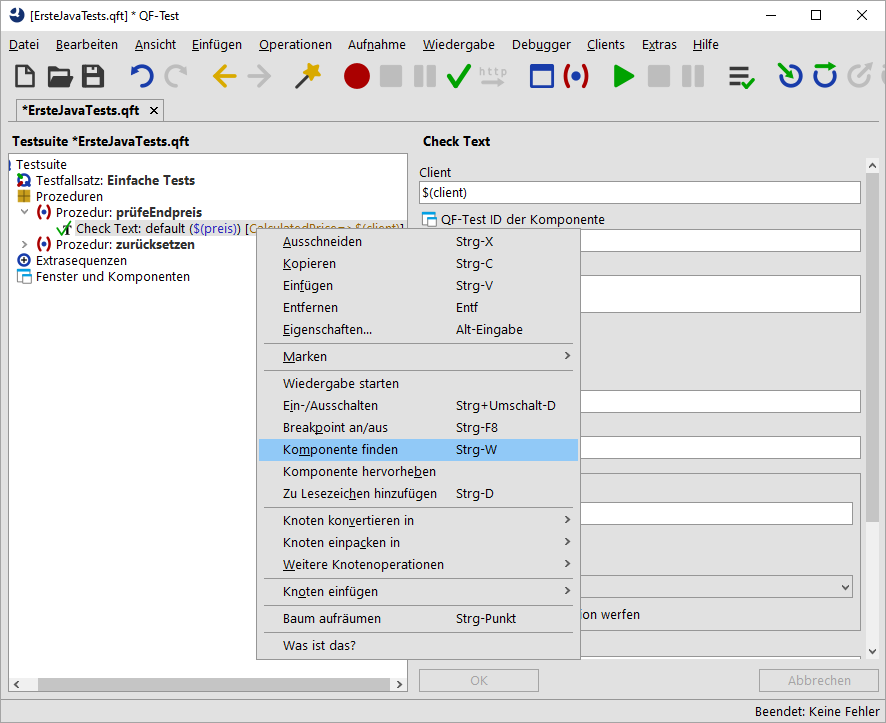
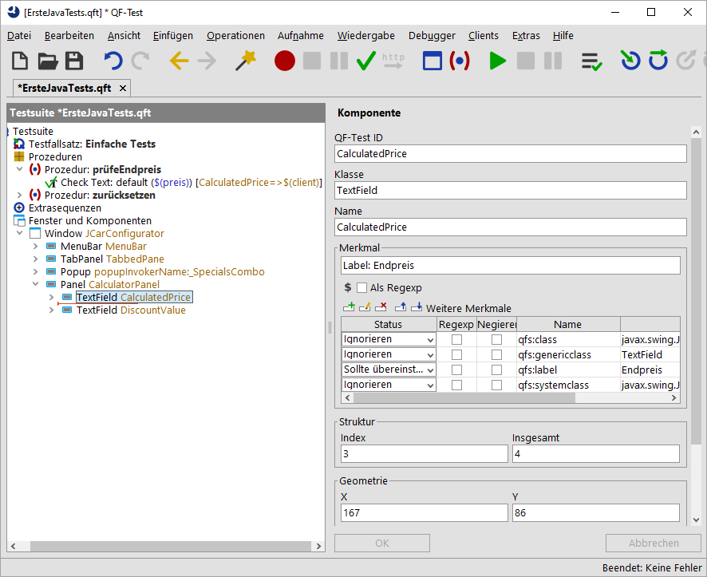
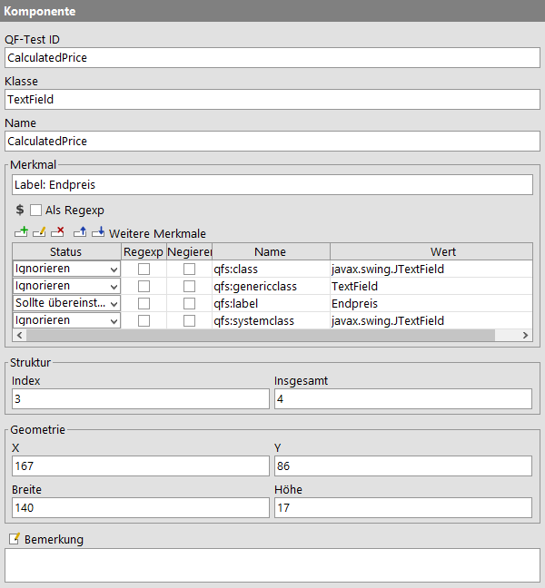

| Version 6.0.3 |
Zum Thema "Komponenten" gibt es mehrere Videos:
 Das Video 'Komponentenerkennung' erläutert
zunächst die Wiedererkennungskriterien für Komponenten, danach (ab Minute 13:07) werden generische Komponenten
erläutert, zuerst solche mit regulären Ausdrücken, danach solche mit Variablen für die
Wiedererkennungsmerkmale.
Das Video 'Komponentenerkennung' erläutert
zunächst die Wiedererkennungskriterien für Komponenten, danach (ab Minute 13:07) werden generische Komponenten
erläutert, zuerst solche mit regulären Ausdrücken, danach solche mit Variablen für die
Wiedererkennungsmerkmale.
Es gibt zwei Videos, die die Behandlung einer ComponentNotFoundException
ausführlich erklären:
Ein einfacher Fall wird im Video 'ComponentNotFoundException - einfacher Fall' erläutert.
Einen komplexeren Fall gibt es in 'ComponentNotFoundException - komplexer Fall'.
Video-Mitschnitt des Spezialwebinars 'Komponentenerkennung'.
QF-Test speichert die Informationen, wie es die im GUI des SUT angezeigten Komponenten wiederfindet, im Bereich 'Fenster und Komponenten' ab. Dabei analysiert QF-Test bei der Aufnahme die erhaltenen GUI-Element-Informationen und speichert diejenigen, mit denen der Anwender interagiert hat, in den Details der 'Komponente' Knoten ab.
Java Swing, JavaFX und SWT verfügen über klare Konzepte, wie eine bestimme Komponente vom Entwickler technisch zu implementieren ist. Daher ist es bei Anwendungen, die mit diesen Sprachen entwickelt wurden, selten nötig, sich näher mit den Komponentenknoten zu befassen. In den meisten Fällen wird QF-Test die Komponente, auf die eine Aktion im GUI abgespielt werden soll, wiederfinden. Nur wenn sich die Oberfläche der Applikation jenseits des Wiedererkennungsalgorithmus von QF-Test verändert hat, müssen Sie sich mit den 'Komponente' Knoten befassen.
Hinweis In diesem Fall finden Sie im Handbuch, Kapitel Lösung von Problemen bei der Wiedererkennung detaillierte Anweisungen. Dort gibt es auch Links auf Videos mit entsprechenden Beispielen.
In diesem Abschnitt wollen wir Ihnen eine Vorstellung davon vermitteln, welche Informationen in 'Komponente' Knoten abgespeichert werden und wie diese von QF-Test für die Wiedererkennung verwendet werden.
Sehen Sie sich die Details einer "TextField" Komponente an.
|
|  | ||
|
| Abbildung 4.2: Komponente finden | ||
Dadurch gelangen Sie direkt zum Knoten "TextField CalculatedPrice" im Bereich 'Fenster und Komponenten'.
|
|  | ||
|
| Abbildung 4.3: Komponentenbaum | ||
Für den 'Komponente' Knoten mit der QF-Test ID CalculatedPrice
sehen die Details wiefolgt aus:
|
|  | ||
|
| Abbildung 4.4: Details eines 'Komponente' Knoten | ||
Wie werden die Attribute des 'Komponente' Knotens zur Wiedererkennung der GUI-Elemente eingesetzt?
Das erste Attribut ist QF-Test ID, das in den Testfällen und Prozeduren zur Ansprache der Komponente verwendet wird. Alle anderen Attribute beziehen sich auf Eigenschaften des GUI-Elements.
Das folgende Attribut ist die Klasse. In unserem Fall TextField.
Für die Komponentenerkennung ist die Klasse ein eindeutiges Merkmal. Die
angezeigte Klasse ist eine von QF-Test verallgemeinerte Klasse, basierend auf der
Java Klasse oder der Java Systemklasse. Durch diese generische Klasse
werden die Tests unabhängig von der konkreten Implementierung und können
leicht portiert werden, z.B. von Java Swing auf den Nachfolger Java FX.
Die speziellen Werte werden in der Tabelle "Weitere Merkmale"
mit den Namen qfs:class und qfs:systemclass abgespeichert.
Sie spielen standardmäßig für die Erkennung keine Rolle, können aber für
Sonderfälle genutzt werden.
Weitere Beispiele für Klassen sind "Panel", "Dialog" und "Button".
Dass Attribut "Name" enthält den Namen oder die Id, die dem GUI-Element seitens des Programmierers gegeben wurde. Falls ein Name vorhanden ist, ist dies für QF-Test zusammen mit der Klasse zur Komponentenerkennung ausreichend. Die übrigen Attribute bleiben dann unberücksichtigt.
Wenn weder ein Name noch eine Id durch den Entwickler gesetzt wurde und das Attribut "Name" daher keinen Wert enthält, verwendet QF-Test andere Kriterien wie z.B. einen bestimmten Text, der zur Komponente gehört, Index und Geometrie.
Ein zur Komponente gehörendes Merkmal wäre bei einer Schaltfläche zum Beispiel
der darauf angezeigte Text. QF-Test speichert Texte, die direkt zur Komponente
gehören, im Attribut "Merkmal" ab. Texte in der
Nähe einer Komponente, die QF-Test als mögliche Beschriftung identifiziert,
werden ebenfalls im Merkmal-Attribut abgespeichert, wobei sie den
Präfix Label: erhalten. Zusätzlich werden diese Texte in der Tabelle
"Weitere Merkmale" unter dem
Namen qfs:label gespeichert.
Die Struktur Informationen beziehen sich auf alle GUI-Elemente der jeweiligen Klasse. Die Gesamtzahl der GUI-Elemente der Klasse wird im Attribut "Insgesamt", der Index der Komponente selbst im Attribut "Index" abgespeichert.
Am Schluss befinden sich die Werte für die Geometrie. Diese erhalten im Wiedererkennungsalgorithmus die geringste Gewichtung. In seltenen Fällen kann es jedoch vorkommen, dass sie die einzigen Kennzeichen sind, die zur Identifizierung des GUI-Elements zur Verfügung stehen.
Wenn Sie an weiteren Details zum genauen Ablauf bei der Wiedererkennung interessiert sind, können Sie diese im Kapitel Komponentenerkennung der technischen Referenz im Handbuch nachlesen.
Um ein Gefühl für die Komponentenerkennung zu erhalten, können Sie ein bisschen mit den Attributwerten herumspielen, bis QF-Test das GUI-Element nicht mehr findet oder sogar eine falsche Komponente auswählt. Sie werden feststellen, dass die Änderungen beträchtlich sein müssen, bevor QF-Test ein falsches GUI-Element identifiziert. Das heißt, dass die Komponentenerkennung von QF-Test sehr robust ist und sich bei neuen Versionen einer Anwendung ein erheblicher Anteil der Attribute eines GUI-Elements verändern kann, bevor die Komponentenerkennung fehlschlägt - selbst wenn das GUI-Element keinen Namen oder keine Id hat.
Beim Klick auf einen 'Komponente' Knoten markiert QF-Test das erkannte GUI-Element mit einem dunkelblauen Rand.
CalculatedPrice aus dem Name-Attribut,
da QF-Test sonst die nachfolgenden Attribute nicht berücksichtigt.
Label: Endpreis auf
Label: xxx.
Label: Endpreis,
entweder über den entsprechenden Button in der Werkzeugleiste oder über das
Tastaturkürzel [Ctrl-Z].
qfs:label in der Weitere-Merkmale-Tabelle von Endpreis
auf Rabatt.
qfs:label in der Weitere-Merkmale-Tabelle
zurück auf Endpreis.
Label: Endpreis auf
Label: Rabatt.
Nun markiert QF-Test das Rabattfeld.
Diese Übung ist nur eine kleine Spielerei mit der Komponentenerkennung. Konkrete Informationen, wie Sie bei Problemen mit der Komponentenerkennung umgehen, finden Sie in den oben genannten und weiteren Kapiteln im Handbuch.
| Letzte Änderung: 6.9.2022 Copyright © 2002-2022 Quality First Software GmbH |